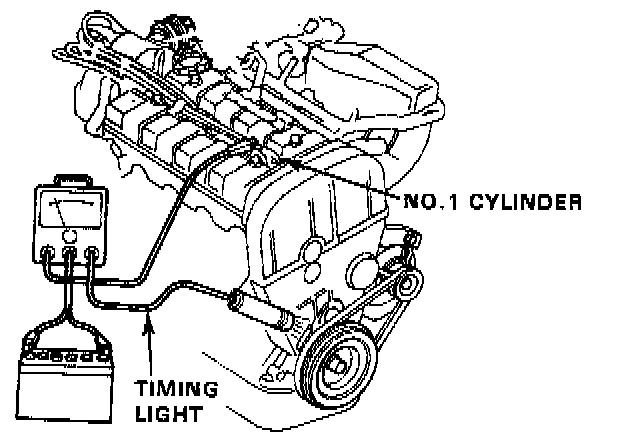
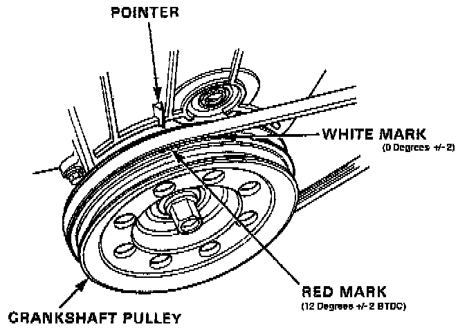
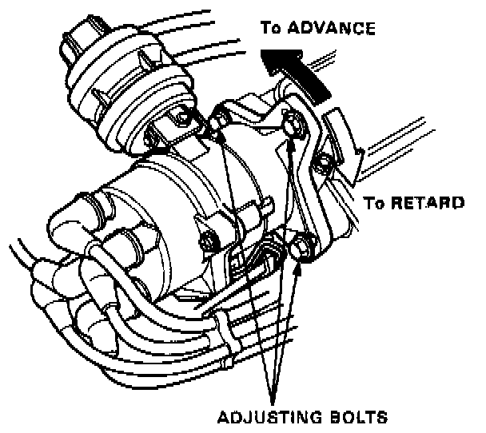
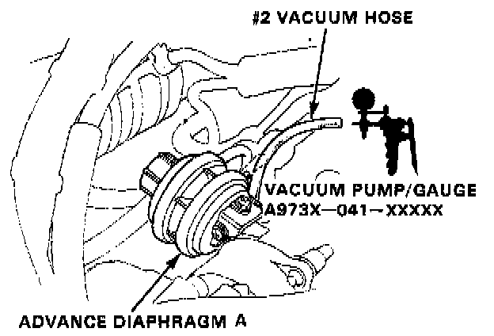
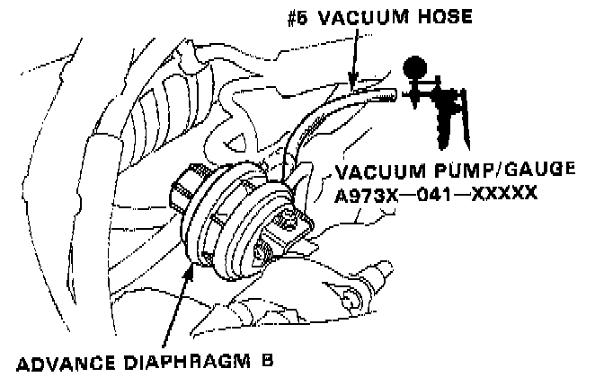

Ignition Timing Adjustment
Ignition Timing Inspection and Setting1. Start the engine and allow it to warm up (cooling fan comes on).
Timing Light:

2. Connect a timing light to the engine. At idle, point the timing light toward the pointer and the crankshaft pulley.
3. Disconnect and plug the # 2 and # 5 vacuum hoses from the vacuum advance diaphragm.
White Mark And Red Mark:

The pointer should be on the white mark (0° ± 2°) on the crankshaft pulley.
Distributor Adjusting:

If not, adjust by loosening the distributor adjusting bolts, and turn the distributor housing counterclockwise to advance the timing or clockwise to retard the timing.
4. After rechecking the timing, install the cap on the upper adjusting bolt.
#2 Vacuum Hose (Diaphragm A):

5. Unplug the # 2 vacuum hose and check for vacuum. Vacuum should be approx. 500 mmHg (20 in. Hg).
If the vacuum is not specified, check both the hose and its port on the throttle body.
6. Connect the # 2 vacuum hose to advance diaphragm.
The timing should advance 6° ± 2° (1/2 way between the white and red marks).
If it does not advance, perform advance diaphragm inspection.
#5 Vacuum Hose (Diaphragm B):

7. Unplug the # 5 vacuum hose and check for vacuum. The # 5 hose should have vacuum.
If the hose has no vacuum, perform the ignition control solenoid valve test I.
8. Rapidly open and release the throttle.
The vacuum should momentarily go to 0.
If the vacuum does not go to 0, perform the ignition control solenoid valve test II.
9. Connect the # 5 vacuum hose to advance diaphragm.
The timing should advance 12° ± 2° (on the red mark).
If it does not advance, perform advance diaphragm inspection.